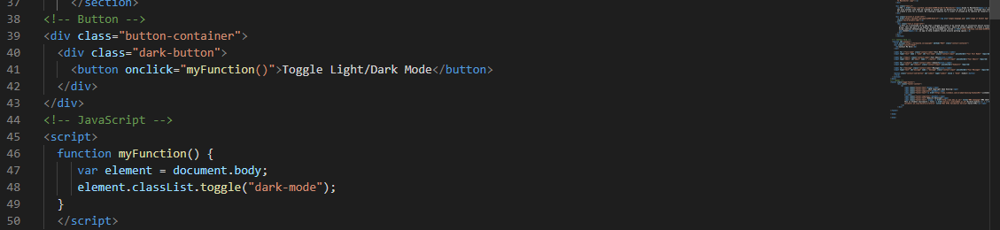

Definition
JavaScript is a programming language that is predominantly used on the web, in fact according to the Manchester Digital Skills Audit (2019) it is the second most in-demand language. It allows for the implementation of complex programs, when a website does more than just display static information. A number of good examples of the use of JavaScript is interactive maps such as Google Maps, validation of data and the ability to react to events (MDN, no date).
The reason for selecting this as one of my self-initiated projects is because it is one of main languages required in order to create high quality websites, alongside the use of HTML and CSS. These are two languages that I already feel comfortable with so widening my knowledge on JavaScript is going to benefit me greatly in creating professional websites.
In my second year of university I gained a small amount of experience using JavaScript, but due to the length of time since I last experimented with this language I had forgotten much of what I had already learned. This is where I first found my interest of JavaScript, although I was only able to do this throughout one year of my university experience as it was not an option for my final year units. My first plan of action was to refresh myself on some of the basic elements of JavaScript through the use of a book, published by my previous lecturer ‘Chris Dawson’. The book explores many of the basics needed to start the journey into JavaScript and I found that my memory was hastily refreshed. Alongside the use of the book I also looked into guides from w3schools which further assisted me.
Set Up
The decision to use CodePen for the prototype was made with ease, using this software allowed me to see instant results from the code that I was editing and also allowed me to group to view the HTML, CSS and JavaScript all on one window. For the final project I have used HTML, CSS and JavaScript programming languages to enable me to create a working product, the coding software used was Microsoft Visual Studio Code as I am most used to this software.
Location
A live version of the website with the Dark Mode feature can be found here.
How
Before I started entering the code onto my own website I created a much simpler prototype in CodePen that can be seen below. This allowed me to gain a general understanding of the process before I began to implement this into my own website. Please feel free to interact with the CodePen to see how it works.
See the Pen Prototype Dark Mode by Adam Downing (@adam-downing) on CodePen.
After creating a prototype, I needed to calculate the best way in which to carry out adding a dark or light mode to my website, I came to the realisation that the most efficient way to do this was through the addition of a button. The button would enable the user to be able to be able to choose whether they preferred the site in light or dark mode.
The first step I carried out was adding the button in a suitable location through the use of HTML, this was towards the top of the page so it could be easily located. I gave the button a suitable label called ‘toggle dark mode’ so the user knows what the button will do.
I then proceeded to create a class within the CSS file that specifies the desired background colour and text colour, as you can see I have named this ‘dark-mode’. To create a dark theme, the chosen background colour is black and text colour is white, this will hopefully help reduce screen glare when users are reading through my site.
This is where the confusing part enters – JavaScript. For JavaScript to work within HTML it has to be entered between ‘script’ tags. Then I needed to create a function defined with the ‘function’ keyword, then a given unique name, I named it ‘myFunction’, which is then followed by parentheses where parameters can be entered, although for this type of programming there is no requirement for them. The code that is going to be executed is entered between curly brackets, similar to CSS. Often with JavaScript you need to manipulate HTML elements, in this case we are finding HTML elements through the use of HTML object collections such as ‘document.body’ and assigning it to a variable called ‘element’. A variable in JavaScript is a container for storing information. In the next line of code we are selecting the variable and ‘classList’ property which returns the class name of an element, which allows us to toggle the dark mode class, to finalise the function is closed using a curly bracket and the script tag is then closed.To finalise we return to the button where we state ‘onClick’ so when a user clicks the button the function is ran.
Evaluation
Overall, I am pleased with the final product although, there could have been some things that were better refined, such as some of the headers on the CV page disappeared when in dark mode, furthermore this also happened with the references on the blog pages. I tried to counter this by overriding some of the code, but I couldn’t seem to get it to work. I am pleased to have widened my knowledge on JavaScript and would feel happy to use this in the future. If I was to carry out the project again, I’d like to iron out some of the errors and possibly delve deeper into JavaScript to see what else it is capable of.